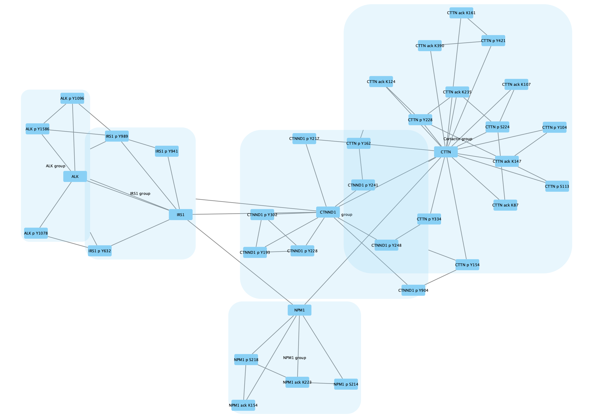

Group Nodes
This protocol shows you how to use node grouping functions to manipulate graphs in Cytoscape.
The ability to group nodes together into “metanodes” and collapse them to a single node in a graph is useful for simplifying views of a complex network. The example in this protocol describes application of node grouping functions to data that includes protein-protein interactions and clustered correlations of protein post-translational modifications.
Adapted from Grimes et al., 2018. Sci. Signal. Vol. 11, Issue 531.

Load Network
First, we will load an example network.
- Download GroupNodes.sif.
- Load the network via
File → Import → Network from File....
The protein nodes are labeled with their protein symbol, eg CTTN, and nodes representing post-translational modifications are labeled with the protein symbol, type of modification and relevant amino acid, eg CTTN p Y228.
Grouping Nodes
We are going to group all the nodes representing CTTN (Cortactin) and its modifications.
- Type CTTN in the
Search field in the toolbar and clickEnter to search. All relevant nodes in the network will be selected. - With the nodes selected, right-click on one of the selected nodes and click
Group → Group Selected Nodes . You will be prompted to name the group, let's call it Cortactin group. - The group will now be outlined with a rounded rectangle.
Collapsing Groups
One of the main motivations for creating groups is to be able to simplify the network view by showing only the group nodes. This is done by collapsing groups.
- Again, right-click on one of the group nodes and select
Group → Collapse Group(s) . - Even though we named the node earlier (as the attribute shared name), the label for the group node is blank. This is because the node label mappping by default uses the name attribute and not shared name. Change the mapping for
Node Label in theStyle tab to shared name.
Expanding Groups
Similarly, collapsed groups can be expanded again to show all the nodes belonging to the group.
- Right-click on the group node and select
Group → Expand Group(s) .
Creating Multiple Groups
A network can have any number of group nodes. For this example network, we can create group nodes for each of the parent proteins by repeating the previous steps for all the proteis (ALK, IRS1, CTNND1, and NPM1):
